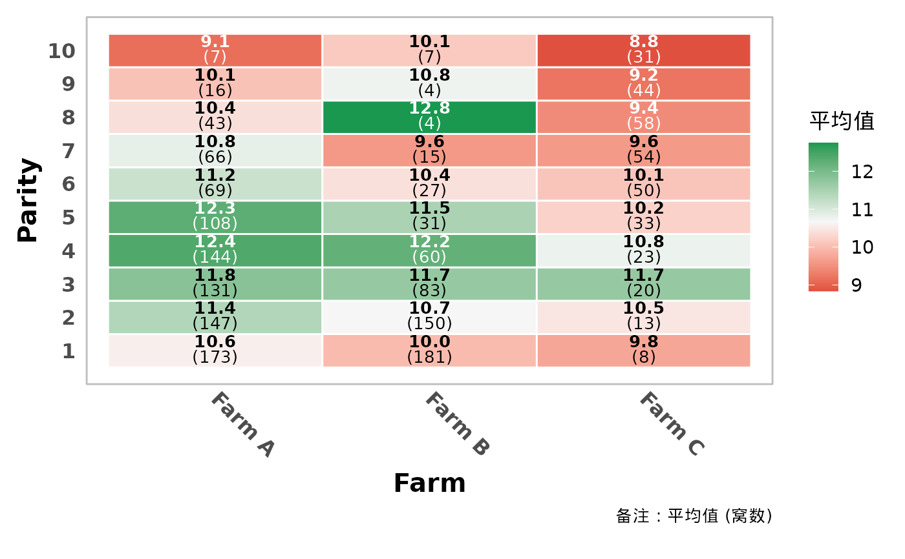
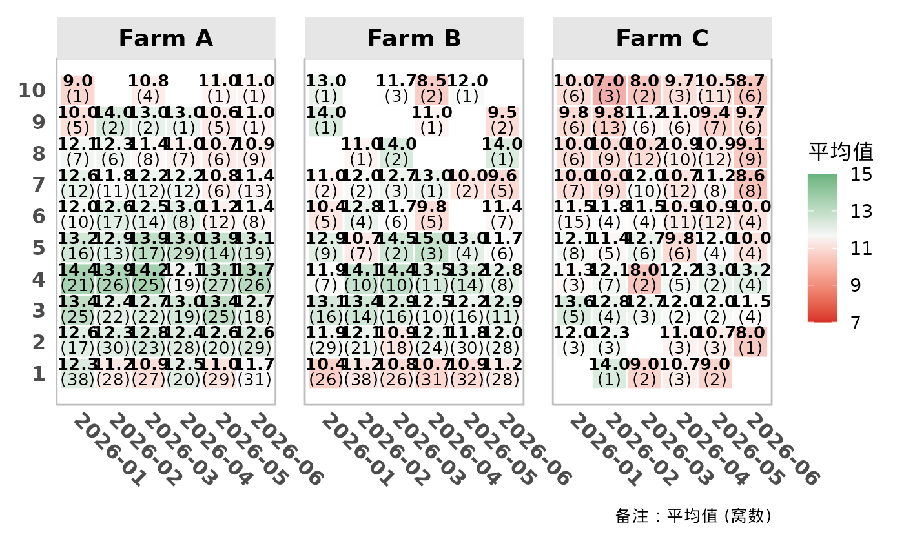
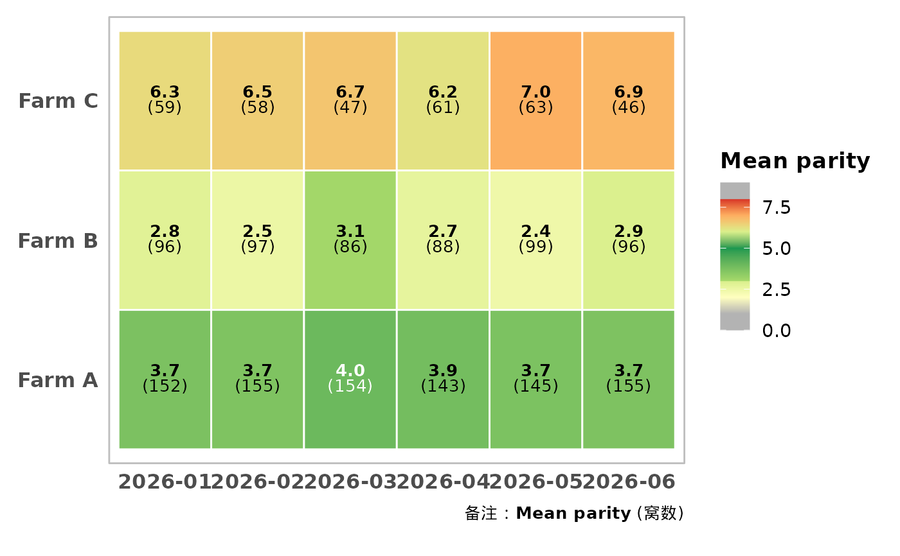

通用热图绘制函数：自动聚合数据（均值/中位数/总和/标准差/...）、HTML 富文本标签、 动态分面、按样本量调节透明度，以及针对任意性状的自定义分段色阶（胎次、背膘厚、 首配日龄等有经验区间划分的性状都适用）。
数据聚合由 summarise_heatmap_data() 完成；如需拿到汇总表，可以直接调用该函数，
或从返回的图对象中取 p$data。
Usage
plot_performance_heatmap(
data,
x_var,
y_var,
fill_var,
facet_vars = NULL,
plot_type = c("general", "parity", "segmented"),
summary_stat = c("mean", "median", "sum", "sd", "min", "max"),
min_count = 1,
x_lab = NULL,
y_lab = NULL,
title = NULL,
subtitle = NULL,
fill_lab = NULL,
show_count = TRUE,
count_label = "窝数",
show_caption = TRUE,
text_layout = c("v", "h"),
label_digits = 1,
label_size = 3.5,
label_color = "auto",
alpha_by_count = FALSE,
alpha_range = c(0.35, 1),
alpha_count_cap = NULL,
low_color = "#D73027",
mid_color = "#F7F7F7",
high_color = "#1A9850",
midpoint = NULL,
color_stops = NULL,
color_limits = NULL,
color_oob = scales::squish,
x_axis_type = c("auto", "parity", "continuous"),
y_axis_type = c("auto", "parity", "continuous"),
auto_detect_pattern = "胎次",
facet_scales = c("free", "free_x", "free_y", "fixed"),
facet_space = c("free", "free_x", "free_y", "fixed"),
clip_off = TRUE,
theme_args = list()
)Arguments
- data
原始数据框。
- x_var, y_var
X 轴、Y 轴映射的列名（字符串）。
- fill_var
需要聚合的数值列名（字符串）。因子或字符型的数字会被自动转换。
- facet_vars
（可选）分面变量名，长度为 1 或 2。
- plot_type
颜色映射方式：
"general"（默认）：红-白-绿双向渐变，中间值默认为统计值的均值；"parity"：内置胎次分段色阶（灰-黄-绿-黄绿-橙-红-灰），见default_parity_stops()， 可用color_stops覆盖。色阶断点是胎次数值（0~10），因此适用于fill_var本身是胎次的场景，例如展示各场、各月的平均胎次；对产仔数等其他指标请用"general"或"segmented"；"segmented"：通用分段色阶，必须通过color_stops提供断点与颜色。
- summary_stat
聚合统计量：
"mean"（默认）、"median"、"sum"、"sd"、"min"、"max"，或自定义函数，例如function(x) quantile(x, 0.9, na.rm = TRUE)。- min_count
单元格最少样本数，低于该值的格子会被剔除，默认为 1（不剔除）。
- x_lab, y_lab, title, subtitle
（可选）X 轴标题、Y 轴标题、总标题、副标题。
- fill_lab
（可选）图例标题。不填则根据
summary_stat自动生成（如"平均值"）。- show_count
是否在格子中显示样本数，默认为
TRUE。- count_label
样本数的名称，用于底部说明文字，默认为"窝数"。
- show_caption
是否显示底部说明文字，默认为
TRUE。- text_layout
格子内文字布局：
"v"（默认，数值在上、样本数在下）或"h"（同一行）。- label_digits
统计值保留的小数位数，默认为 1。显示时会补齐小数位（如
2.0）。- label_size
格子文字大小，默认为 3.5。
- label_color
格子文字颜色。默认
"auto"：根据格子填充色的亮度自动选择黑色 或白色，保证深色格子上的文字也清晰可读；也可以传入固定颜色，如"black"。- alpha_by_count
是否按样本量调节格子透明度（样本越少越透明），用来提示 "该格子的统计结果不够可靠"。默认为
FALSE。- alpha_range
长度为 2 的透明度范围（最小, 最大），默认为
c(0.35, 1)。- alpha_count_cap
（可选）样本量达到该值即视为充分，透明度封顶。默认取数据中 样本量的最大值。
- low_color, mid_color, high_color
"general"模式下渐变的低/中/高端颜色。- midpoint
（可选）
"general"模式下渐变的中间值，默认取统计值的均值。- color_stops
（可选）分段色阶断点，含
value、color两列，按value升序， 允许重复value制造硬分界。详见build_segment_scale()。- color_limits
（可选）分段色阶的取值范围，默认为
range(color_stops$value)。- color_oob
分段色阶越界值处理函数，默认为
scales::squish()。- x_axis_type, y_axis_type
坐标轴刻度策略：
"auto"（默认，变量名匹配auto_detect_pattern时按胎次处理）、"parity"（强制从 1 开始的整数刻度， 要求该列为数值型）、"continuous"（ggplot2 默认刻度）。- auto_detect_pattern
"auto"模式下识别"胎次类"变量名的正则表达式，默认为"胎次"。- facet_scales
分面的
scales策略，传给ggplot2::facet_grid()，默认为"free"。- facet_space
分面的
space策略，默认为"free"（面板大小随类别数变化， 各格子物理大小基本一致）。只在对应方向的facet_scales为 free 时生效。 如果某些分面类别很少、面板过窄导致文字被遮挡，可改成"fixed"。- clip_off
是否关闭坐标系裁剪，默认为
TRUE，避免窄分面中贴近边缘的标签被切掉。 函数内部会添加coord_cartesian(clip = "off")，因此之后再叠加其他coord_*()时 ggplot2 会提示坐标系被替换，这是正常现象。- theme_args
传给
get_common_theme()的参数列表，用于调整字号、坐标轴角度、 分面间距等，例如list(x_axis_angle = 0, strip_text_size = 16)。
Examples
# 通用红-白-绿渐变：各场、各胎次的平均断奶数
plot_performance_heatmap(
sow_demo,
x_var = "farm", y_var = "parity", fill_var = "weaned",
y_axis_type = "parity",
x_lab = "Farm", y_lab = "Parity"
)

# 按场分面 + 按样本量调节透明度（高胎次窝数少，格子更透明）
plot_performance_heatmap(
sow_demo,
x_var = "month", y_var = "parity", fill_var = "born_alive",
facet_vars = "farm",
y_axis_type = "parity",
alpha_by_count = TRUE,
theme_args = list(x_axis_angle = -45, strip_text_size = 14)
)

# 胎次分段配色：各场、各月的平均胎次（3~5 胎为绿色，偏低为黄色，偏高为橙红色）
plot_performance_heatmap(
sow_demo,
x_var = "month", y_var = "farm", fill_var = "parity",
plot_type = "parity",
fill_lab = "Mean parity",
theme_args = list(x_axis_angle = 0)
)
